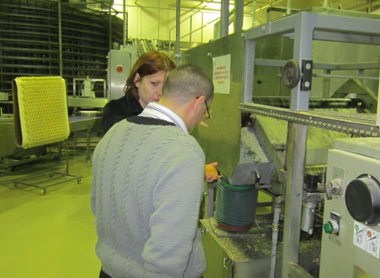
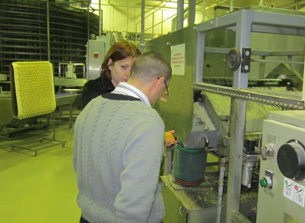

Our mission:
To promote the export of Ukrainian goods to the markets of Arab and Islamic countries, to contribute to building bridges between the Islamic the world and Ukraine
Ensure Ukrainian food market accessible for Muslims Halal goods category.
To promote sales of the goods of Ukrainian producers of halal compliant.
Provide jobs to Muslims living in Ukraine.
Сertification
In many countries strictly monitor quality Halal products are certified and if violations are detected, the manufacturers are subject to heavy fines.
In the CIS Halal industry is growing only 10-15 years, whereas in America and Europe - is the norm of social life.
In Ukraine, the system carries out product audits "Center for Research and Certification Halal" Alraid "in collaboration with the" Ummah "Spiritual Directorate of Muslims of Ukraine, which included works" for Fatwa Committee of DUMA "Ummah". It includes imams with sharia formation. It formed a commission of this committee, which goes to the production to examine compliance with production technology "halal" standards.
In order to comply with the meat and poultry "halal" standards, certain conditions must be met. "Halal" (permissible) should not include explicitly prohibited ingredients ("haram").
To unambiguously prohibited ingredients include:
- carrion;
- blood;
- pork;
- animals slaughtered not the name of God, the downtrodden in the name of some deity or saint (idolatry);
- animals killed by strangulation or other animals; died as a result of high voltage, shock or falling;
- predatory animals (wolf, lion, tiger, etc.) and birds of prey (falcon, hawk, eagle and others.);
- meat dogs, donkeys and mules;
All these prohibitions apply not only to the main raw material (meat and fat), but also apply to raw materials and auxiliary materials, such as additives, fillers, spices, natural sausage casings, gelatin thickeners and other.
Our clients
At the moment, the client will receive a certificate of conformity in the center
Certification Alraid are the leading food producers in Ukraine.
Structure of the organization
Sharia education in Islamic countries:
Shadi Othman
Head of the Committee
Sergey Ismagilov
Committeeman
Islyam Gimadutin
Committeeman
Seyran Arifov
Committeeman
Company's news
Ukrainian beef with a "Halal" by OOO "IPC Meats»
LLC "Meats IPC" manufactures and distributes beef. Through the use of new efficient meat production technology, production of "IPC Meats»
Read more >It began production of halal confectionery products under the trademark of "Good smack"
Kharkov Plant "Foodstuffs" - modern and stable enterprise on production and sale of confectionery izdeliy.Zavod was established in 1966, distant, and since ...
Read more >Halal Ice Cream TM Laska
Enterprise of public association "Association of support domestic producers", "Laska Company" was founded in 2000 on the territory of the former ...
Read more >Halal cookies and crackers from TM Yarich
Confectionery factory "Yarych" - a combination of modern technology, high quality products and the work of specialists, whose work makes the world of confectionery ...
Read more >Gallery
some points of our activity
Quality control
Began production of halal
confectionery products under
TM "Good smac"
 

{kind=link}


Halal production "Nasha Ryaba"
Confectionery factory "Yarych" - a combination of modern technology, high-quality products
and the work of specialists, whose work makes the world of confectionery...
Contacts
Regarding certification procedures, please contact
to the address, fill in the feedback form
or fill apply for
CENTER FOR RESEARCH AND CERTIFICATION OF HALAL "ALRAID"
Islamic Social Cultural Centre
Kiev, 04119, st. Degtyarevskaya 25A
Phone.: (044) 490 99 00, Fax: (044) 490 99 22
Phone - 097-108-00-88
Е-mail: info@halal.org.uaЕ-mail: halal@arraid.org